IUPAC Nomenclature : Complex Substituents and Cycloalkanes
(You Tube Playlist Link)
- Some Basic Principles and Naming Of Alkanes
- Complex Substituents and Cycloalkanes
- Naming Of Alkenes and Alkynes
- Functional Groups with Secondary Suffix
- Naming Of Alcohols
- Naming Of Aldehydes and Ketones
- Naming of Carboxylic Acids and Acid Halides
- Naming Of Acid Amides and Esters
- Naming of Cyanides, Amines, and Ethers
- Naming of Polyfunctional Compounds (More than One Functional Group)
- Naming Of Aromatic Compounds - Benzene Rings
- Naming Of Bicyclo and Spiro Compounds
-
What is a complex substituent
-
What is a complex substituent
- A complex substituentis one that has its own branching.
- Example
-
Naming rules of complex substituents
- Assign first number to the Carbon which is directly attached to the main chain.
- Then follow IUPAC naming for the complex substituent - treating it like a main chain with it's own substituents.
- The complex sunstituent is awlays written in brackets.
- The complex substituent should end with "yl" even though it is being treated as a carbon chain on it's own.
- Examples : complex substituent naming
-
Common naming of complex substituents
-
Example of common Name : the common name of the below compund is
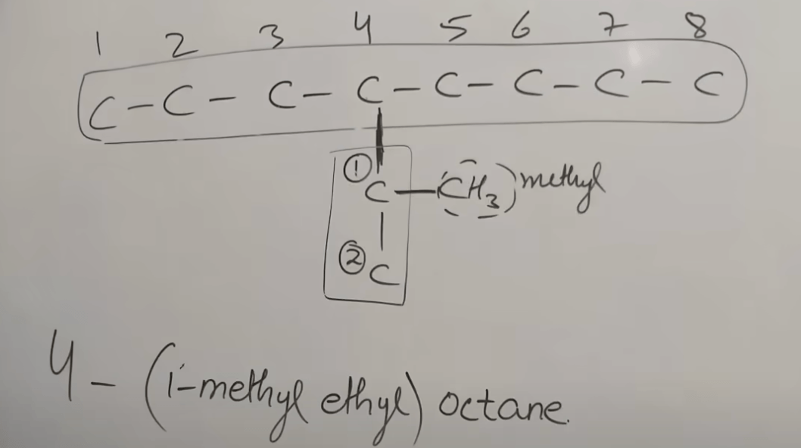
4-isopropyl octane - While assigning common name, we count all the carbon atoms in the complex substituent.
-
Rules for common names of complex substituents:
Substituent IUPAC Name Common Name Comments 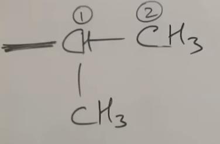 1-methyl ethyl Iso-propyl "iso" if a middle C is attached to the main chain. 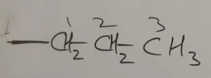 propyl n-propyl "n", if the edge C is attached to the main chain. 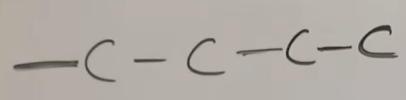 butyl n-butyl since the edge C is attached to the main chain. 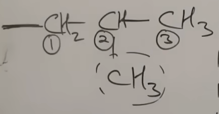 2-methyl propyl iso-butyl 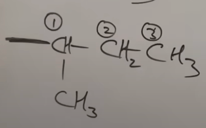 1-methyl propyl secondary-butyl (or sec-butyl) The carbon that is attached to the main chain has two other carbons attached to it. 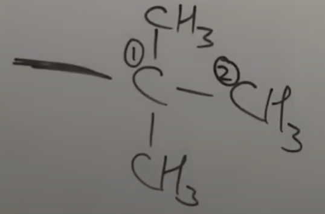 1,1-dimethyl ethyl tertiary-butyl (or t-butyl/tert-butyl) The carbon that is attached to the main chain has three other carbons attached to it. 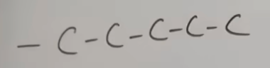 pentyle n-pentyle 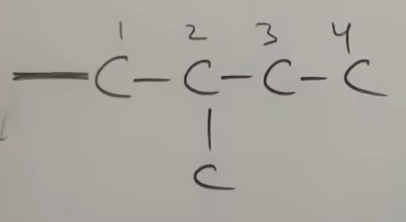 2-mthyl butyl iso-pentyl 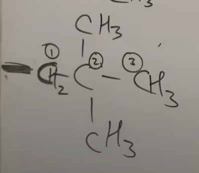 2,2-dimethyl propyl neo-pentyl if there is dimethyl at 2,2, it is called "neo".
-
Example of common Name : the common name of the below compund is
-
Cycloalkanes
-
Example
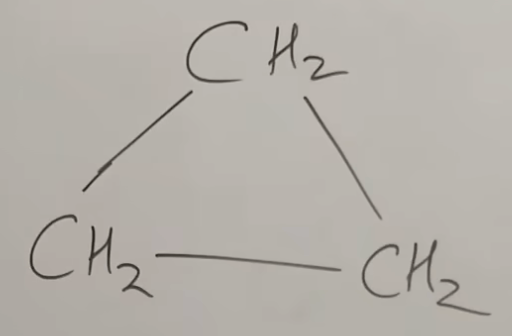
This is cyclopropane.
-
Example
-
Naming of Cycloalkanes
-
if there is a chain and a cycle :
FG > double/triple bond > higher numer of C-atoms
Example:
Using the above rule, this compound is
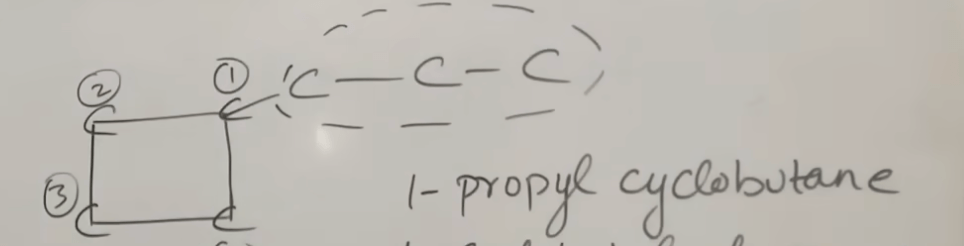
1-propyl cyclobutane. - If even the number of carbon atoms are the same, ring gets priority over chain, so Ring > Chain
-
if there is a chain and a cycle :
-
Examples on Naming of Cycloalkanes
-
HW Problems on Naming of Cycloalkanes
-
2-ethyl 1,1-dimethyl cyclohexane
-
2,3,4-triethyl 1-1dimethyl cyclobutane
-